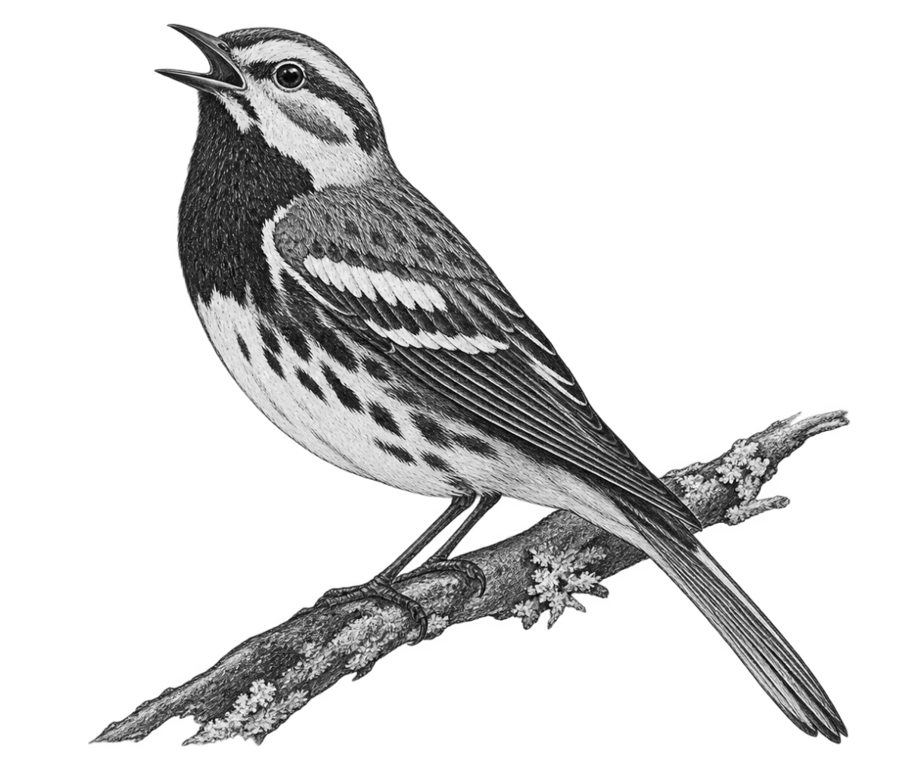

Seasonal Notes
By Elise Tillinghast
june
Black fly season continues – and with it, your chance to contribute personally to aquatic food webs. Well-fed females (males don't bite) lay their eggs in running water.
Except when it blooms in early summer, Clayton's sweetroot is easy to mistake for yet another forest fern. In fact, it's a member of the carrot family – and a host plant for black swallowtail caterpillars.

As black-throated green warblers start breeding eggs, males abandon their courtship songs and stick with their territorial zee-zee-zo-zee.

The foamy homes of spittlebugs – nymphs of high-jumping insects called hoppers – appear on tall grass, garden plants, and even white pines. The "spit," which is basically aerated plant sap, bubbles out of the bugs' back ends and serves as both camouflage and climate control. Extendable abdominal tubes provide access to air.
White-tailed deer's new antlers begin the month as fuzzy knobs but grow rapidly. In just a few weeks, they form all their branches.
Eastern pondhawk nymphs emerge in wetlands, molt, and take to the air to hunt other flying insects. Between forays, dragonflies often perch on the ground, and you may see powder-blue males and bright emerald females along shorelines.
Platterful mushrooms grow on old wood logs as well as from rotting roots and other underground wood. As they mature, their brown caps often develop checks and streaks, and they curl back in a wavy pattern, revealing bright white gills.
Although adult mice often hunt mice, this year's young will likely stick to smaller prey, including insects, frogs, and crayfish.
Summer fishflies and serrate dark fishflies show up on porch lights. These ancient insects, 300-million-year-old "living fossils," are conspicuous for their awkward, oversized translucent wings and long bodies.
july
American basswood trees continue to bloom and attract bees, but their yellow flowers have started to fall to the ground. If you look up, you can see paired clusters of fruits attached to straight, long stems.
Turkey vultures raise just one or two chicks a year. At this point, the bald, black-headed nestlings are still covered in white down.
The phrase dog days of summer, a 40-day period that starts on July 3, derives from ancient observations of the return of Sirius, the Dog Star. In the Northeast, Sirius won't show up until the second week of August.
Like their hermit thrush cousins, eastern bluebirds may have a second brood, and first-generation fledglings will sometimes help to raise their younger siblings.